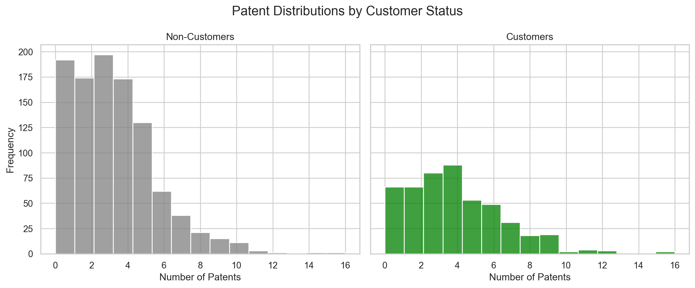
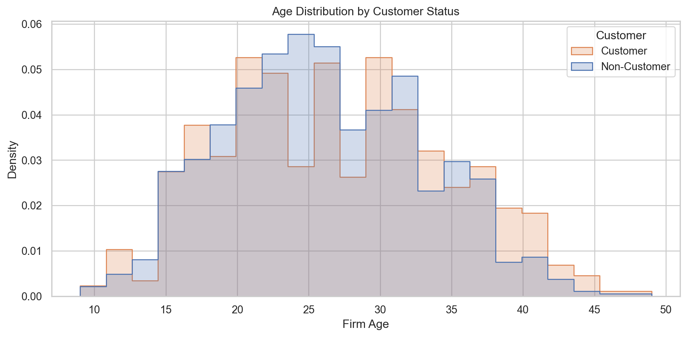
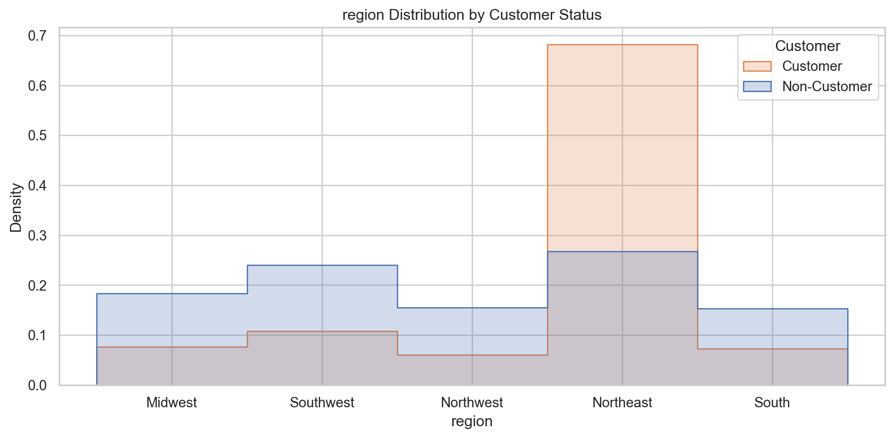
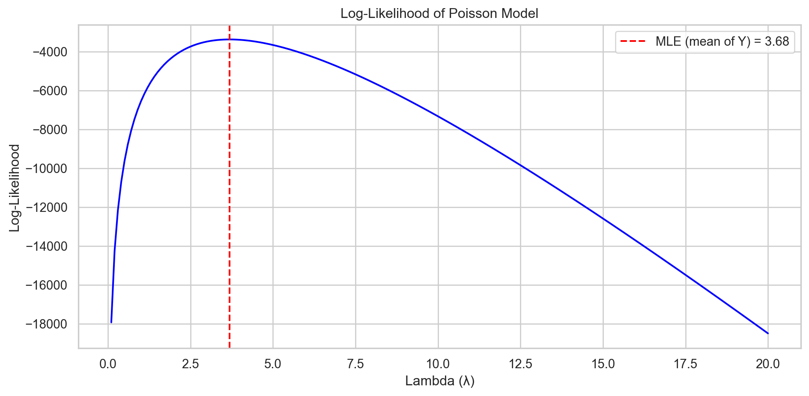
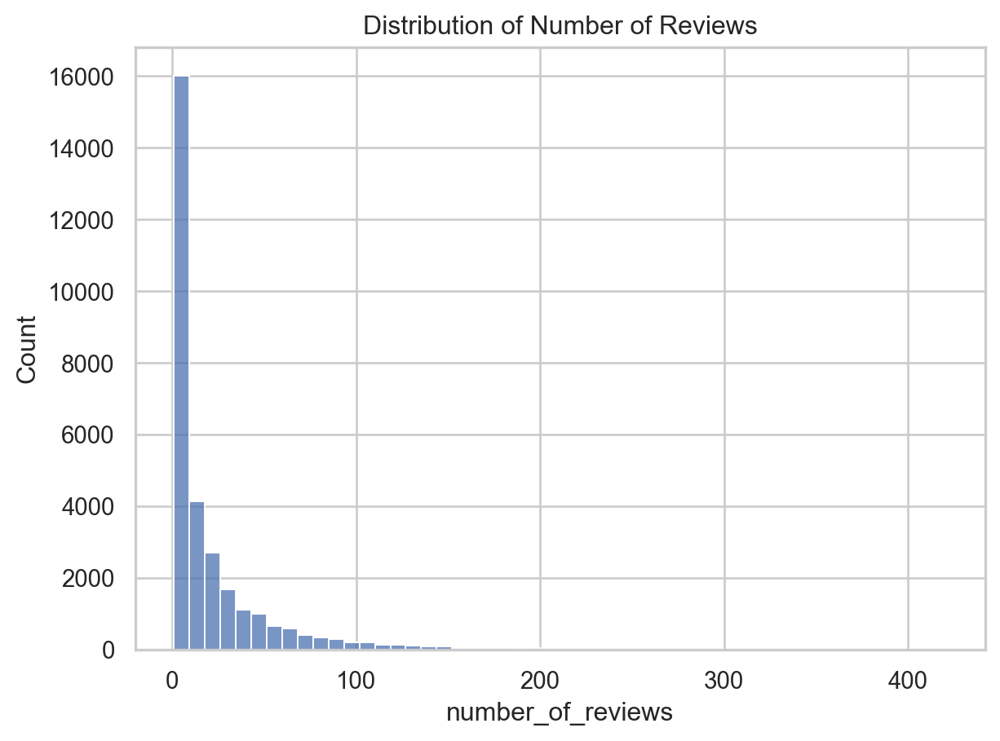
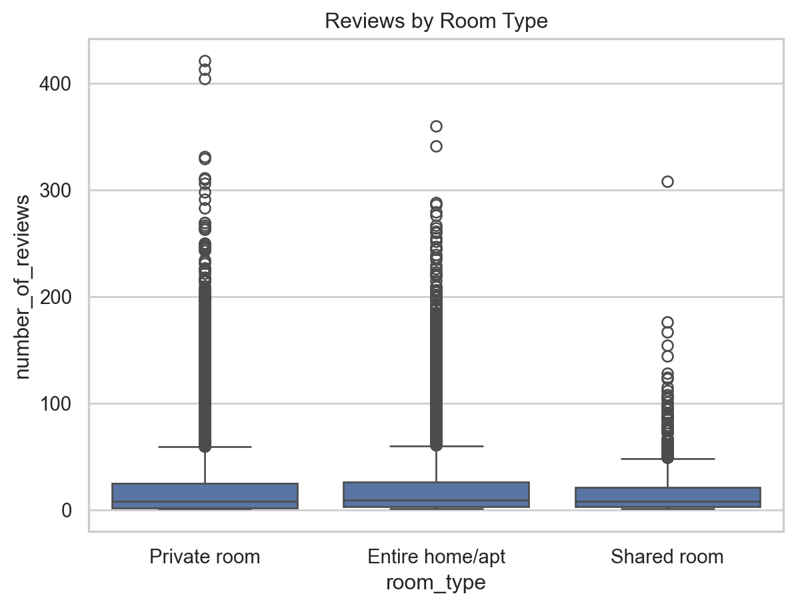

import pandas as pd
df = pd.read_csv("blueprinty.csv")
df.head()| patents | region | age | iscustomer | |
|---|---|---|---|---|
| 0 | 0 | Midwest | 32.5 | 0 |
| 1 | 3 | Southwest | 37.5 | 0 |
| 2 | 4 | Northwest | 27.0 | 1 |
| 3 | 3 | Northeast | 24.5 | 0 |
| 4 | 3 | Southwest | 37.0 | 0 |
Your Name
May 6, 2025
Blueprinty is a small firm that makes software for developing blueprints specifically for submitting patent applications to the US patent office. Their marketing team would like to make the claim that patent applicants using Blueprinty’s software are more successful in getting their patent applications approved. Ideal data to study such an effect might include the success rate of patent applications before using Blueprinty’s software and after using it. Unfortunately, such data is not available.
However, Blueprinty has collected data on 1,500 mature (non-startup) engineering firms. The data include each firm’s number of patents awarded over the last 5 years, regional location, age since incorporation, and whether or not the firm uses Blueprinty’s software. The marketing team would like to use this data to make the claim that firms using Blueprinty’s software are more successful in getting their patent applications approved.
| patents | region | age | iscustomer | |
|---|---|---|---|---|
| 0 | 0 | Midwest | 32.5 | 0 |
| 1 | 3 | Southwest | 37.5 | 0 |
| 2 | 4 | Northwest | 27.0 | 1 |
| 3 | 3 | Northeast | 24.5 | 0 |
| 4 | 3 | Southwest | 37.0 | 0 |
import matplotlib.pyplot as plt
import seaborn as sns
sns.set(style="whitegrid")
fig, axs = plt.subplots(1, 2, figsize=(12, 5), sharey=True)
sns.histplot(df[df["iscustomer"] == 0]["patents"], bins=15, color="gray", ax=axs[0])
axs[0].set_title("Non-Customers")
axs[0].set_xlabel("Number of Patents")
axs[0].set_ylabel("Frequency")
sns.histplot(df[df["iscustomer"] == 1]["patents"], bins=15, color="green", ax=axs[1])
axs[1].set_title("Customers")
axs[1].set_xlabel("Number of Patents")
plt.suptitle("Patent Distributions by Customer Status", fontsize=16)
plt.tight_layout()
plt.show()
The histograms and average values reveal the following:
iscustomer = 0):
iscustomer = 1):
On average, firms that use Blueprinty’s software hold more patents than those that do not.
This difference in distribution and mean provides initial evidence that Blueprinty customers may be more successful in securing patents.
Blueprinty customers are not selected at random. It may be important to account for systematic differences in the age and regional location of customers vs non-customers.
import seaborn as sns
import matplotlib.pyplot as plt
plt.figure(figsize=(10, 5))
sns.histplot(data=df, x="age", hue="iscustomer", element="step", stat="density", common_norm=False)
plt.title("Age Distribution by Customer Status")
plt.xlabel("Firm Age")
plt.ylabel("Density")
plt.legend(title="Customer", labels=["Customer", "Non-Customer"])
plt.tight_layout()
plt.show()
import seaborn as sns
import matplotlib.pyplot as plt
plt.figure(figsize=(10, 5))
sns.histplot(data=df, x="region", hue="iscustomer", element="step", stat="density", common_norm=False)
plt.title("region Distribution by Customer Status")
plt.xlabel("region")
plt.ylabel("Density")
plt.legend(title="Customer", labels=["Customer", "Non-Customer"])
plt.tight_layout()
plt.show()
These results highlight systematic differences between customers and non-customers:
These imbalances suggest that age and region may confound the observed relationship between Blueprinty usage and patent success.
Since our outcome variable of interest can only be small integer values per a set unit of time, we can use a Poisson density to model the number of patents awarded to each engineering firm over the last 5 years. We start by estimating a simple Poisson model via Maximum Likelihood.
Write down mathematically the likelihood for_ \(Y \sim \text{Poisson}(\lambda)\). Note that \(f(Y|\lambda) = e^{-\lambda}\lambda^Y/Y!\).
If we observe \(n\) independent observations \(Y_1, Y_2, \dots, Y_n\) from a Poisson distribution, the likelihood function is:
\[ L(\lambda) = \prod_{i=1}^{n} f(Y_i|\lambda) = \prod_{i=1}^{n} \frac{e^{-\lambda} \lambda^{Y_i}}{Y_i!} = e^{-n\lambda} \lambda^{\sum_{i=1}^n Y_i} \prod_{i=1}^{n} \frac{1}{Y_i!} \]
Taking the natural log of the likelihood, we obtain the log-likelihood function:
\[ \ell(\lambda) = \log L(\lambda) = -n\lambda + \left( \sum_{i=1}^n Y_i \right) \log \lambda - \sum_{i=1}^n \log(Y_i!) \]
To find the maximum likelihood estimator (MLE), we take the derivative with respect to \(\lambda\), set it equal to 0, and solve:
\[ \frac{d\ell}{d\lambda} = -n + \frac{\sum Y_i}{\lambda} = 0 \quad \Rightarrow \quad \hat{\lambda} = \frac{1}{n} \sum Y_i \]
Therefore, the MLE of \(\lambda\) is the sample mean \(\bar{Y}\).
We used our log-likelihood function to evaluate the Poisson model over a range of λ values, using the observed number of patents as our data.
The plot above shows that the log-likelihood is maximized near the sample mean of the data (shown by the red dashed line), which is consistent with the fact that the MLE for λ in a Poisson model is simply the sample mean.
import numpy as np
import matplotlib.pyplot as plt
Y = df["patents"]
lambda_vals = np.linspace(0.1, 20, 200)
log_likes = [poisson_loglikelihood(lmbda, Y) for lmbda in lambda_vals]
plt.figure(figsize=(10, 5))
plt.plot(lambda_vals, log_likes, color='blue')
plt.axvline(Y.mean(), color='red', linestyle='--', label=f'MLE (mean of Y) = {Y.mean():.2f}')
plt.title("Log-Likelihood of Poisson Model")
plt.xlabel("Lambda (λ)")
plt.ylabel("Log-Likelihood")
plt.legend()
plt.grid(True)
plt.tight_layout()
plt.show()
Recall that the log-likelihood for the Poisson model is:
\[ \ell(\lambda) = \sum_{i=1}^{n} \left[ -\lambda + Y_i \log \lambda - \log(Y_i!) \right] \]
Taking the derivative with respect to ( ):
\[ \frac{d\ell}{d\lambda} = \sum_{i=1}^{n} \left[ -1 + \frac{Y_i}{\lambda} \right] = -n + \frac{\sum Y_i}{\lambda} \]
Setting the derivative equal to zero:
\[ -n + \frac{\sum Y_i}{\lambda} = 0 \quad \Rightarrow \quad \hat{\lambda} = \frac{1}{n} \sum Y_i = \bar{Y} \]
Therefore, the maximum likelihood estimator ( ) is the sample mean.
Optimizing my likelihood function with sp.optimize() in Python.
import numpy as np
from scipy.optimize import minimize_scalar
from scipy.special import gammaln
def neg_poisson_loglikelihood(lmbda, Y):
if lmbda <= 0:
return np.inf
return -np.sum(-lmbda + Y * np.log(lmbda) - gammaln(Y + 1))
Y = df["patents"]
result = minimize_scalar(neg_poisson_loglikelihood, bounds=(0.01, 20), args=(Y,), method='bounded')
print(f"Numerical MLE for lambda: {result.x:.4f}")
print(f"Sample mean of Y (closed-form MLE): {Y.mean():.4f}")Numerical MLE for lambda: 3.6847
Sample mean of Y (closed-form MLE): 3.6847Next, we extend our simple Poisson model to a Poisson Regression Model such that \(Y_i = \text{Poisson}(\lambda_i)\) where \(\lambda_i = \exp(X_i'\beta)\). The interpretation is that the success rate of patent awards is not constant across all firms (\(\lambda\)) but rather is a function of firm characteristics \(X_i\). Specifically, we will use the covariates age, age squared, region, and whether the firm is a customer of Blueprinty.
import numpy as np
import pandas as pd
import patsy
from scipy.special import gammaln
from scipy.optimize import minimize
df["age2"] = df["age"] ** 2
design = patsy.dmatrix("1 + age + age2 + C(region) + iscustomer",
df, return_type="dataframe")
X = design.values
Y = df["patents"].values
names = design.design_info.column_names
def loglik(beta, Y, X):
λ = np.exp(X @ beta)
return np.sum(-λ + Y * np.log(λ) - gammaln(Y + 1))
def negloglik(beta, Y, X):
return -loglik(beta, Y, X)
def grad_negloglik(beta, Y, X):
λ = np.exp(X @ beta)
return X.T.dot(λ - Y)
def hess_negloglik(beta, Y, X):
λ = np.exp(X @ beta)
return X.T.dot(X * λ[:, None])
beta0 = np.zeros(X.shape[1])
res = minimize(
fun=negloglik,
x0=beta0,
args=(Y, X),
method='trust-ncg',
jac=grad_negloglik,
hess=hess_negloglik,
options={'gtol':1e-8, 'xtol':1e-8, 'maxiter':100, 'disp': True}
)
beta_hat = res.x
H_obs = hess_negloglik(beta_hat, Y, X)
cov_beta= np.linalg.inv(H_obs)
se_beta = np.sqrt(np.diag(cov_beta))
mle = pd.DataFrame({
"Coefficient (MLE)": beta_hat,
"Std. Error (MLE)": se_beta
}, index=names).round(4)
import statsmodels.api as sm
import statsmodels.formula.api as smf
glm = smf.glm(
formula="patents ~ age + age2 + C(region) + iscustomer",
data=df,
family=sm.families.Poisson()
).fit()
glm_res = pd.DataFrame({
"Coefficient (GLM)": glm.params,
"Std. Error (GLM)": glm.bse
}).round(4)
print(mle.join(glm_res)) Current function value: 3258.072145
Iterations: 39
Function evaluations: 37
Gradient evaluations: 35
Hessian evaluations: 35C:\Users\25645\AppData\Local\Programs\Python\Python312\Lib\site-packages\scipy\optimize\_minimize.py:732: OptimizeWarning:
Unknown solver options: xtol
C:\Users\25645\AppData\Local\Programs\Python\Python312\Lib\site-packages\scipy\optimize\_minimize.py:732: RuntimeWarning:
A bad approximation caused failure to predict improvement.
Coefficient (MLE) Std. Error (MLE) \
Intercept -0.5089 0.1832
C(region)[T.Northeast] 0.0292 0.0436
C(region)[T.Northwest] -0.0176 0.0538
C(region)[T.South] 0.0566 0.0527
C(region)[T.Southwest] 0.0506 0.0472
age 0.1486 0.0139
age2 -0.0030 0.0003
iscustomer 0.2076 0.0309
Coefficient (GLM) Std. Error (GLM)
Intercept -0.5089 0.1832
C(region)[T.Northeast] 0.0292 0.0436
C(region)[T.Northwest] -0.0176 0.0538
C(region)[T.South] 0.0566 0.0527
C(region)[T.Southwest] 0.0506 0.0472
age 0.1486 0.0139
age2 -0.0030 0.0003
iscustomer 0.2076 0.0309 We fit a Poisson regression model to predict the number of patents awarded to engineering firms using the following predictors: - Firm age and age squared - Region (Midwest is the omitted reference group) - Whether the firm is a Blueprinty customer
The results from both our custom MLE implementation and the statsmodels GLM function are identical, confirming the correctness of our likelihood function and optimization procedure.
Intercept: The baseline log-rate of patents for a firm in the Midwest, with average age, and not using Blueprinty.
Region Effects: None of the region coefficients are statistically significant at conventional levels. This suggests no strong evidence that region alone explains differences in patenting rates, relative to the Midwest baseline.
Age and Age²:
Blueprinty Customer (iscustomer):
import numpy as np
X_0 = X.copy()
X_1 = X.copy()
iscustomer_index = names.index("iscustomer")
X_0[:, iscustomer_index] = 0
X_1[:, iscustomer_index] = 1
y_pred_0 = np.exp(X_0 @ beta_hat)
y_pred_1 = np.exp(X_1 @ beta_hat)
avg_effect = np.mean(y_pred_1 - y_pred_0)
print(f"Average predicted effect of Blueprinty software: {avg_effect:.4f} patents")Average predicted effect of Blueprinty software: 0.7928 patentsAirBnB is a popular platform for booking short-term rentals. In March 2017, students Annika Awad, Evan Lebo, and Anna Linden scraped of 40,000 Airbnb listings from New York City. The data include the following variables:
- `id` = unique ID number for each unit
- `last_scraped` = date when information scraped
- `host_since` = date when host first listed the unit on Airbnb
- `days` = `last_scraped` - `host_since` = number of days the unit has been listed
- `room_type` = Entire home/apt., Private room, or Shared room
- `bathrooms` = number of bathrooms
- `bedrooms` = number of bedrooms
- `price` = price per night (dollars)
- `number_of_reviews` = number of reviews for the unit on Airbnb
- `review_scores_cleanliness` = a cleanliness score from reviews (1-10)
- `review_scores_location` = a "quality of location" score from reviews (1-10)
- `review_scores_value` = a "quality of value" score from reviews (1-10)
- `instant_bookable` = "t" if instantly bookable, "f" if not<class 'pandas.core.frame.DataFrame'>
RangeIndex: 40628 entries, 0 to 40627
Data columns (total 14 columns):
# Column Non-Null Count Dtype
--- ------ -------------- -----
0 Unnamed: 0 40628 non-null int64
1 id 40628 non-null int64
2 days 40628 non-null int64
3 last_scraped 40628 non-null object
4 host_since 40593 non-null object
5 room_type 40628 non-null object
6 bathrooms 40468 non-null float64
7 bedrooms 40552 non-null float64
8 price 40628 non-null int64
9 number_of_reviews 40628 non-null int64
10 review_scores_cleanliness 30433 non-null float64
11 review_scores_location 30374 non-null float64
12 review_scores_value 30372 non-null float64
13 instant_bookable 40628 non-null object
dtypes: float64(5), int64(5), object(4)
memory usage: 4.3+ MB| Unnamed: 0 | id | days | last_scraped | host_since | room_type | bathrooms | bedrooms | price | number_of_reviews | review_scores_cleanliness | review_scores_location | review_scores_value | instant_bookable | |
|---|---|---|---|---|---|---|---|---|---|---|---|---|---|---|
| count | 40628.000000 | 4.062800e+04 | 40628.000000 | 40628 | 40593 | 40628 | 40468.000000 | 40552.000000 | 40628.000000 | 40628.000000 | 30433.000000 | 30374.000000 | 30372.000000 | 40628 |
| unique | NaN | NaN | NaN | 2 | 2790 | 3 | NaN | NaN | NaN | NaN | NaN | NaN | NaN | 2 |
| top | NaN | NaN | NaN | 4/2/2017 | 12/21/2015 | Entire home/apt | NaN | NaN | NaN | NaN | NaN | NaN | NaN | f |
| freq | NaN | NaN | NaN | 25737 | 65 | 19873 | NaN | NaN | NaN | NaN | NaN | NaN | NaN | 32759 |
| mean | 20314.500000 | 9.698889e+06 | 1102.368219 | NaN | NaN | NaN | 1.124592 | 1.147046 | 144.760732 | 15.904426 | 9.198370 | 9.413544 | 9.331522 | NaN |
| std | 11728.437705 | 5.460166e+06 | 1383.269358 | NaN | NaN | NaN | 0.385884 | 0.691746 | 210.657597 | 29.246009 | 1.119935 | 0.844949 | 0.902966 | NaN |
| min | 1.000000 | 2.515000e+03 | 1.000000 | NaN | NaN | NaN | 0.000000 | 0.000000 | 10.000000 | 0.000000 | 2.000000 | 2.000000 | 2.000000 | NaN |
| 25% | 10157.750000 | 4.889868e+06 | 542.000000 | NaN | NaN | NaN | 1.000000 | 1.000000 | 70.000000 | 1.000000 | 9.000000 | 9.000000 | 9.000000 | NaN |
| 50% | 20314.500000 | 9.862878e+06 | 996.000000 | NaN | NaN | NaN | 1.000000 | 1.000000 | 100.000000 | 4.000000 | 10.000000 | 10.000000 | 10.000000 | NaN |
| 75% | 30471.250000 | 1.466789e+07 | 1535.000000 | NaN | NaN | NaN | 1.000000 | 1.000000 | 170.000000 | 17.000000 | 10.000000 | 10.000000 | 10.000000 | NaN |
| max | 40628.000000 | 1.800967e+07 | 42828.000000 | NaN | NaN | NaN | 8.000000 | 10.000000 | 10000.000000 | 421.000000 | 10.000000 | 10.000000 | 10.000000 | NaN |
relevant_vars = [
"number_of_reviews", "days", "room_type", "bathrooms", "bedrooms",
"price", "review_scores_cleanliness", "review_scores_location",
"review_scores_value", "instant_bookable"
]
AB_clean = AB[relevant_vars].dropna()
AB_clean["instant_bookable"] = AB_clean["instant_bookable"].map({"t": 1, "f": 0})import seaborn as sns
import matplotlib.pyplot as plt
sns.histplot(AB_clean["number_of_reviews"], bins=50)
plt.title("Distribution of Number of Reviews")
plt.show()
sns.boxplot(x="room_type", y="number_of_reviews", data=AB_clean)
plt.title("Reviews by Room Type")
plt.show()

import patsy
import statsmodels.api as sm
formula = "number_of_reviews ~ days + bathrooms + bedrooms + price + review_scores_cleanliness + review_scores_location + review_scores_value + C(room_type) + instant_bookable"
y, X = patsy.dmatrices(formula, AB_clean, return_type="dataframe")
poisson_model = sm.GLM(y, X, family=sm.families.Poisson()).fit()
summary_df = pd.DataFrame({
"Coefficient": poisson_model.params,
"Std. Error": poisson_model.bse
}).round(4)
summary_df| Coefficient | Std. Error | |
|---|---|---|
| Intercept | 3.4980 | 0.0161 |
| C(room_type)[T.Private room] | -0.0105 | 0.0027 |
| C(room_type)[T.Shared room] | -0.2463 | 0.0086 |
| days | 0.0001 | 0.0000 |
| bathrooms | -0.1177 | 0.0037 |
| bedrooms | 0.0741 | 0.0020 |
| price | -0.0000 | 0.0000 |
| review_scores_cleanliness | 0.1131 | 0.0015 |
| review_scores_location | -0.0769 | 0.0016 |
| review_scores_value | -0.0911 | 0.0018 |
| instant_bookable | 0.3459 | 0.0029 |
We used a Poisson regression model to estimate how Airbnb listing features are associated with the number of reviews, which we treat as a proxy for the number of bookings.
Below is an interpretation of the key coefficients:
Intercept (3.498)
The expected log number of reviews for the baseline listing — an “Entire home/apt” with zero values for numeric variables — is 3.498. This serves as the reference point.
Room Type
The model includes two dummy variables for room type (relative to the reference category, which is likely “Entire home/apt”):
C(room_type)[T.Private room] = -0.0105C(room_type)[T.Shared room] = -0.2463Days Listed (0.0001)
A small but positive coefficient, suggesting that listings that have been active longer tend to accumulate more reviews.
Bathrooms (-0.1177)
Surprisingly, an increase in the number of bathrooms is associated with fewer reviews, all else equal. This may reflect luxury listings with less volume or niche targeting.
Bedrooms (0.0741)
More bedrooms are associated with more reviews — likely due to accommodating larger groups, which increases bookings.
Price (≈ 0)
The price coefficient is close to 0, suggesting that, controlling for other features, price has little to no direct relationship with review count.
Review Scores:
Instant Bookable (0.3459)
Listings that can be booked instantly receive significantly more reviews.
( e^{0.3459} ), suggesting about a 41% increase in expected review counts for instant-bookable listings.
The strongest positive predictors of review volume are: - Being instantly bookable - Higher cleanliness scores - More bedrooms
Shared rooms and higher bathroom counts are associated with fewer reviews, which may reflect listing type preferences or usage patterns.